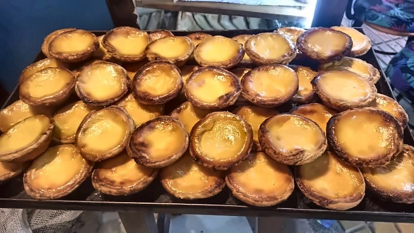
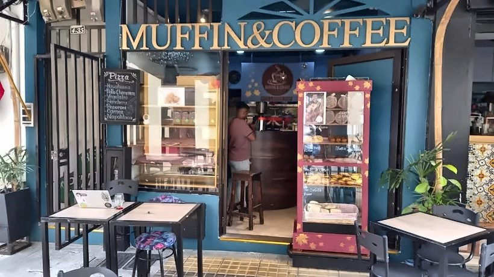
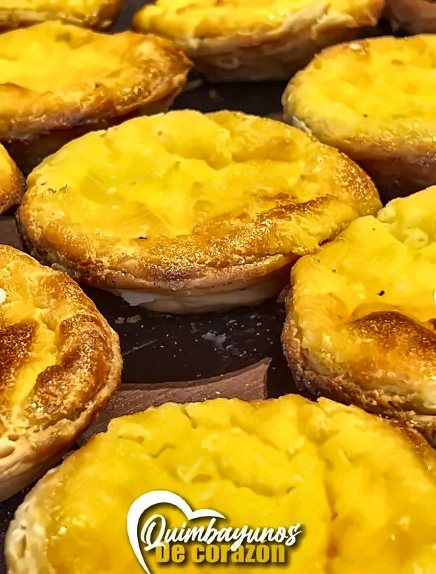

Diseño 1
Diseño 1Azulejo de Belém
Azul y crema, inspirado en los azulejos de Portugal, cuna del pastel de nata.
Ver diseño →
Diseño 2Noche Dorada
Negro y dorado, elegante y de lujo, con fotos a pantalla completa.
Ver diseño →
Diseño 3Café del Pasaje
Con los colores reales del local y el menú en una pizarra, cálido y cercano.
Ver diseño →
Diseño 4Moderno
Letras grandes, tarjetas y carrusel de fotos, un estilo actual tipo revista.
Ver diseño →